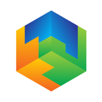

<mat-sidenav-container class="sidenav-container">
  <mat-sidenav #drawer mode="side" opened  class="sidenav" *ngIf="auth.isLoggedIn">
    <mat-toolbar>
      <a class="home-button" routerLink="/">
          <span>Yii2 Angular Template</span>
      </a>
    </mat-toolbar>
    <mat-nav-list class="navigation-list">
      <a class="navigation-item" mat-list-item routerLink="/dashboard" routerLinkActive="active-link">
        <mat-icon class="material-icons">dashboard</mat-icon><span class="navigation-item-label">Dashboard</span>
      </a>
      <a class="navigation-item" mat-list-item routerLink="/user" routerLinkActive="active-link">
        <mat-icon class="material-icons">people</mat-icon><span class="navigation-item-label">Users</span>
      </a>
    </mat-nav-list>
    <p class="love">From Databox with Love</p>
  </mat-sidenav>

  <mat-sidenav-content class="sidenav-content">
    <mat-toolbar class="sidenav-content-toolbar" color="primary" *ngIf="auth.isLoggedIn">
      <button mat-icon-button class="menu-button" type="button" aria-label="Toggle sidenav" (click)="drawer.toggle()">
        <i class="material-icons">menu</i>
      </button>
      <span class="filler">
          <!-- You can place a search bar here or anything you like -->
      </span>
      <div>
        <a mat-button [swal]="{ title: 'Do you want to logout?', showCancelButton: true, confirmButtonText: 'Yes', cancelButtonText: 'No' }" (confirm)="logout()">Logout</a>
      </div>
    </mat-toolbar>
      <router-outlet></router-outlet>
      <ngx-spinner bdOpacity = 0.9 bdColor = "#333" size = "medium" color = "#d60909" type = "square-spin" [fullScreen] = "true" ></ngx-spinner>
      <swal
        #alertSwal
        title="{{alert.title}}?"
        text="{{alert.text}}"
        [showCancelButton]="false"
        [focusCancel]="false">
      </swal>
  </mat-sidenav-content>
</mat-sidenav-container>
